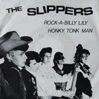

the Slippers - Rock-A-Billy Lily / Honky Tonk Man (Single, 1981)
01 - Rock-A-Billy Lilly (1:35)
02 - Honky Tonk Man (2:21)
© Johanna :: [JHNS 187]
Notes
Finland.
First track "Rock-A-Billy Lilly" is credited to Murray/Campi. Second track "Honky Tonk Man" is credited to Hausex/Horton/Franks
reference information: Discogs®
Review
105/366 (Project 366)
On current days the Slippers are pretty mature Rock'n'Roll musicians. With a great variety in their tunes, early the Slippers were with distinctive rockin' and rollin' Rockabilly Revival sound and repertoire
This single is quite close to Finnish Rockabilly that is highly inspired by UK Rockabilly and Rock'n'Roll Revival. Speed, rave, style, old fashion, rebels, rustic. And actually a classic set of the 1980s, which attracted Teds, Country Rockers and energetic youth.
First song "Rock-A-Billy Lilly" is fast paced Rockabilly. Straightforwardly fancy and cool. The tune invigorates the listener with its revival rockin' and rollin' way. Move and dance to the music, youth enthusiasm.
And the next track with Country Rockabilly and Hillbilly mood. Sounds classic, with a good touch of pleasure in performance. Mood and motive - openly and diligently. It's more interesting to listen to. You want and enjoy it from the first seconds. Relax to the tune, honky tonkin'.
Growing up, they retained energy, but became more seasoned and modish. Varied in sound and technically not as straightforward as before. But, well, their early recordings were very special.